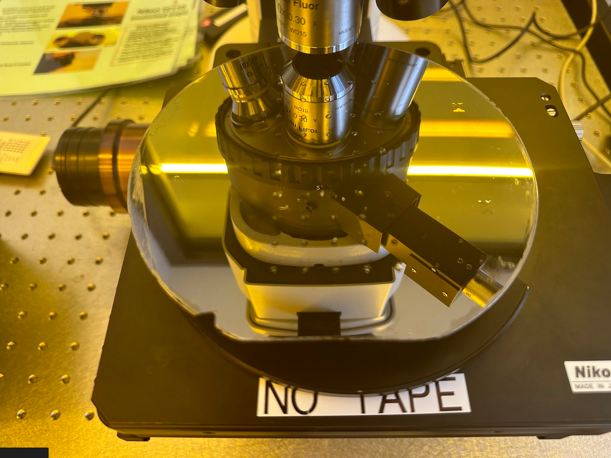
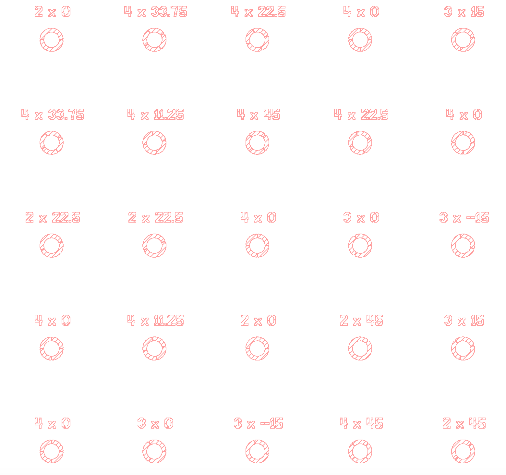
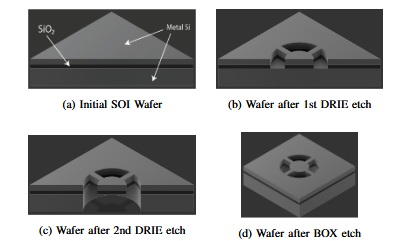
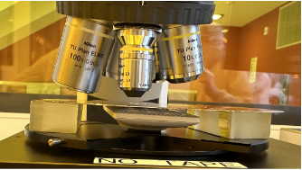
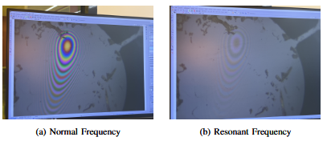
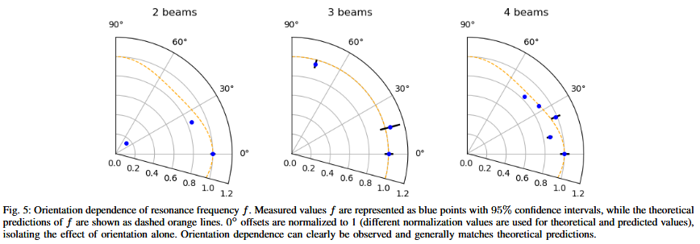

MEMS Spring Orientation
The connection between orientation and resonance

Abstract
My team and I were motivated to worked on this project because we were curious if the microelectromechanical systems (MEMS) spring's alighnment within a silicon wafer would affect the spring's behavior. We believed that this could give a potentially new parameter to tune MEMS spring to a specific resonance to obtainable previously, which could be useful to produce specific sensors. To conduct this investigation, we designed our own MEMS springs with varying orientation with respect to traditional orientation. Then we fabricated those springs using specific technique like deep reactive ion etching (DRIE) to produce the delicate beams of the springs. We then ran tests with the sample springs to find each uniquely-aligned spring's resonance and compared the varying ones with the control design. Our data suggests that there is a connection between the springs' resonances and how they were oriented.
Approach
There were 3 steps to this project: designing the wafer with the varying orientation of the springs, fabricating the wafer, and testing each spring samples.
Design
The design of the MEMS springs wafer required writing Python's scripts to properly alignment samples in uniformed distances from each other. Since manual design is tedious and can lead to inaccuracies, writing a script for the design is rather more efficient and precise. The script then outputs layout file, and we then used KLayout to view the wafer design. This software is great as it not only allowed us to view the design, but also allowed us to make minor edits. By viewing the layout and noting some minor errors, we were able to make all the adjustments needed to adhere to the fabrication constraint provided.

Fabrication
There is a dedicated wafer fabrication lab within our institution where we were able to fabricate our designed springs. Our spring design has a unique property where it requires the layer underneath the spring's beam needed to be etched away. To ensure can achieve this result, we used a combination of photolithography and the DRIE etching technique. Photolitography is used to first implement spring beam on the wafer only at the top layer. The DRIE technique works by applying a coating on the layer not wanting to be etched, and then an etching gas is used to etch the cavity under the spring beams.

Test
Once the springs were fabricated, we were then able to run tests on the springs. This process involves placing the wafer above two spaced blocks so that the wafer is within the viewing range of the reflected light telescope. In between the two blocks that props the wafer above goes a bluetooth speaker. The bluetooth speaker is used to output varying frequencies of sound that would help us find the resonant frequency of the springs.

While viewing a spring through the microscope, we begin doing a frequency sweep starting from 0 Hz. We know when resonance is achieved when the reflected light pattern on the spring fades away. We then note the frequency at which the resonance is observed and proceed with other springs.

Result
The reason why we were noting down the resonant frequencies of the springs was because the resonance is a unique property of the spring, and since we were interested to see what effect does adjusting the orientation have on the springs, we could use the resonant frequencies to see if there are any differences in between orientations. If there is, that suggest that there is indeed a connection between the spring's alignment to the crystal lattice structure of the silicon wafer to the spring's property. With our sampled data, we derived a conclusion that there does exist a correlation between orientation and the resonant frequency of the spring. As shown in the figure below, the angle represents the different offset angle at which the springs were oriented at and the values at the bottom represent the normalized frequencies. These samples have shown that resonance were observed at different frequencies when the springs are oriented differently. As an addition, we also ran test on springs with varying number of beams. We had additional room on our wafer, so tested this along with our original investigation. Our data also shows that the different number of beams in a spring indicates different resonant frequencies.

Challenges & Wrap-Up
This research was my first in-depth exploration involving microfabrication. I was interested on circuit design and had worked on projects related to it, so I thought it would be useful to learn microfabrication and how integrated circuits (IC) are made. Although MEMS spring is not actually an IC, I do think it was equally useful as MEMS spring is used in common sensors like accelerometers and gyroscopes. The main challenge working on this project was the fabrication process where some parts required us to do the process manually instead of a machine. This opened up opportunities for irreversible mistakes to happen, which could affect our test data and our conclusion.